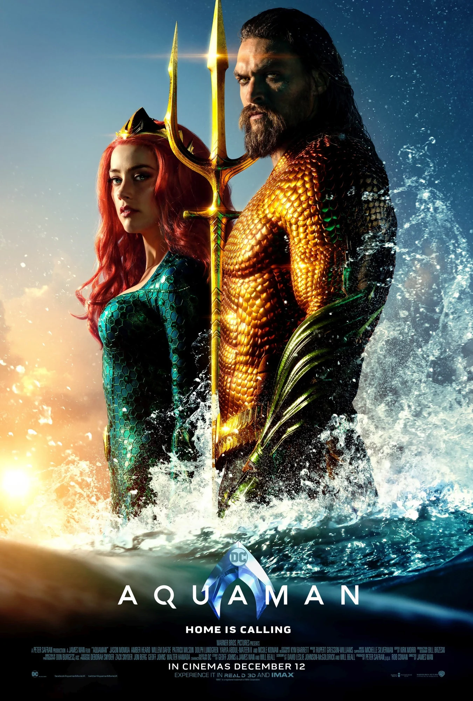

Aquaman
A cidade de Atlantis, que já foi lar de uma das mais avançadas civilizações do mundo, agora é um reino submerso dominado pelo ganancioso Rei Orm. Com um vasto exército a seu dispor, Orm planeja conquistar tanto os demais reinos do oceano, quanto o mundo da superfície. Em seu caminho está Aquaman, meio-humano e meio-atlante, e verdadeiro herdeiro do trono. Com a ajuda da princesa Mera, Aquaman precisa recuperar o lendário Tridente de Atlan e aceitar seu destino como protetor das profundezas.
Filmes mais vistos
